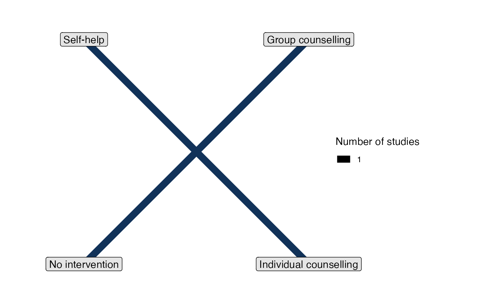

Check whether a network is connected - whether there is a path of study evidence linking every pair of treatments in the network.
Arguments
- network
An
nma_dataobject, as created by the functionsset_*()orcombine_network().
Details
Models will still run with disconnected networks. However, estimated relative effects between treatments across disconnected parts of the network will be entirely based on the prior distribution (typically very uncertain), as there is no information to update the prior distribution. Relative effects within each connected sub-network will be estimated as if each sub-network had been analysed separately.
Examples
## Smoking cessation
# Set up network of smoking cessation data
head(smoking)
#> studyn trtn trtc r n
#> 1 1 1 No intervention 9 140
#> 2 1 3 Individual counselling 23 140
#> 3 1 4 Group counselling 10 138
#> 4 2 2 Self-help 11 78
#> 5 2 3 Individual counselling 12 85
#> 6 2 4 Group counselling 29 170
smk_net <- set_agd_arm(smoking,
study = studyn,
trt = trtc,
r = r,
n = n,
trt_ref = "No intervention")
# Print details
smk_net
#> A network with 24 AgD studies (arm-based).
#>
#> ------------------------------------------------------- AgD studies (arm-based) ----
#> Study Treatment arms
#> 1 3: No intervention | Group counselling | Individual counselling
#> 2 3: Group counselling | Individual counselling | Self-help
#> 3 2: No intervention | Individual counselling
#> 4 2: No intervention | Individual counselling
#> 5 2: No intervention | Individual counselling
#> 6 2: No intervention | Individual counselling
#> 7 2: No intervention | Individual counselling
#> 8 2: No intervention | Individual counselling
#> 9 2: No intervention | Individual counselling
#> 10 2: No intervention | Self-help
#> ... plus 14 more studies
#>
#> Outcome type: count
#> ------------------------------------------------------------------------------------
#> Total number of treatments: 4
#> Total number of studies: 24
#> Reference treatment is: No intervention
#> Network is connected
is_network_connected(smk_net) # TRUE, network is connected
#> [1] TRUE
## A disconnected network
disc_net <- set_agd_arm(smoking[smoking$studyn %in% c(15, 21), ],
study = studyn,
trt = trtc,
r = r,
n = n)
is_network_connected(disc_net) # FALSE, network is disconnected
#> [1] FALSE
disc_net
#> A network with 2 AgD studies (arm-based).
#>
#> ------------------------------------------------------- AgD studies (arm-based) ----
#> Study Treatment arms
#> 15 2: Group counselling | No intervention
#> 21 2: Individual counselling | Self-help
#>
#> Outcome type: count
#> ------------------------------------------------------------------------------------
#> Total number of treatments: 4
#> Total number of studies: 2
#> Reference treatment is: Group counselling
#> Network is disconnected
plot(disc_net)
